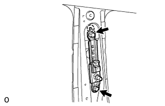
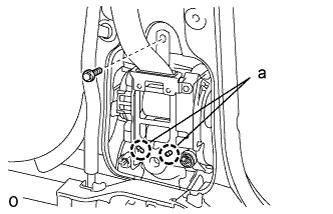
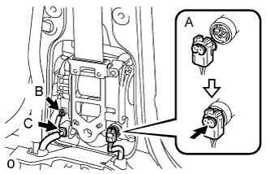
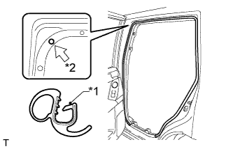
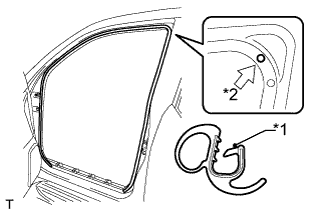

FRONT SEAT OUTER BELT ASSEMBLY > INSTALLATION |
| 1. INSTALL FRONT SHOULDER BELT ANCHOR ADJUSTER ASSEMBLY |
|  |
Align the claw with the anchor plate positioning hole, and install the anchor adjuster with the 2 bolts.
| 2. INSTALL FRONT SEAT OUTER BELT ASSEMBLY LH |
|  |
Align the seat belt retractor positioning holes with the claws of the vehicle.
Install the seat belt with the bolt.
|  |
Connect the pretensioner connector labeled A as shown in the illustration.
Connect the tension reducer connector labeled B.
w/ Pre-crash Safety System:
Connect the pre-crash safety system connector labeled C.
Install the shoulder anchor to the shoulder belt anchor adjuster with the nut.
| 3. INSTALL CENTER PILLAR GARNISH LH |
Pass the front seat outer belt floor anchor through the center pillar garnish.
Attach the 2 clips and 2 guides to install the center pillar garnish.
Install the bolt.
| 4. INSTALL NO. 2 ASSIST GRIP |
Attach the 2 claws to install the No. 2 assist grip.
Install the 2 bolts.
| 5. INSTALL NO. 2 ASSIST GRIP PLUG LH |
Attach the 2 claws to install the front No. 2 assist grip plug.
| 6. INSTALL LOWER CENTER PILLAR GARNISH LH |
Attach the 4 claws and 2 clips to install the lower center pillar garnish.
Install the front seat outer belt floor anchor with the bolt.
| 7. INSTALL OUTER LAP BELT ANCHOR COVER |
Attach the 3 claws to install the outer lap belt anchor cover
| 8. INSTALL REAR DOOR OPENING TRIM WEATHERSTRIP LH |
|  |
Align the paint mark on the rear door opening trim weatherstrip with the mark position on the vehicle and install the rear door opening trim weatherstrip as shown in the illustration.
| *1 | Paint Mark |
| *2 | Mark Position |
| 9. INSTALL REAR DOOR SCUFF PLATE LH |
Attach the 3 clips, 6 claws and 2 guides to install the rear door scuff plate.
| 10. INSTALL QUARTER SCUFF PLATE LH (w/ Rear No. 2 Seat) |
Install the quarter scuff plate with the 2 bolts.
| 11. INSTALL REAR NO. 1 FLOOR STEP COVER (w/ Rear No. 2 Seat) |
Attach the 2 claws to install the rear No. 1 floor step cover.
| 12. INSTALL FRONT DOOR OPENING TRIM WEATHERSTRIP LH |
|  |
Align the paint mark on the front door opening trim weatherstrip with the mark position on the vehicle and install the front door opening trim weatherstrip as shown in the illustration.
| *1 | Paint Mark |
| *2 | Mark Position |
| 13. INSTALL DOOR SCUFF PLATE ASSEMBLY LH |
Connect the connector.
Attach the 4 clips, 10 claws and 2 guides to install the door scuff plate.
| 14. CONNECT CABLE TO NEGATIVE BATTERY TERMINAL |
| 15. CHECK SRS WARNING LIGHT |
Check the SRS warning light (Click here).